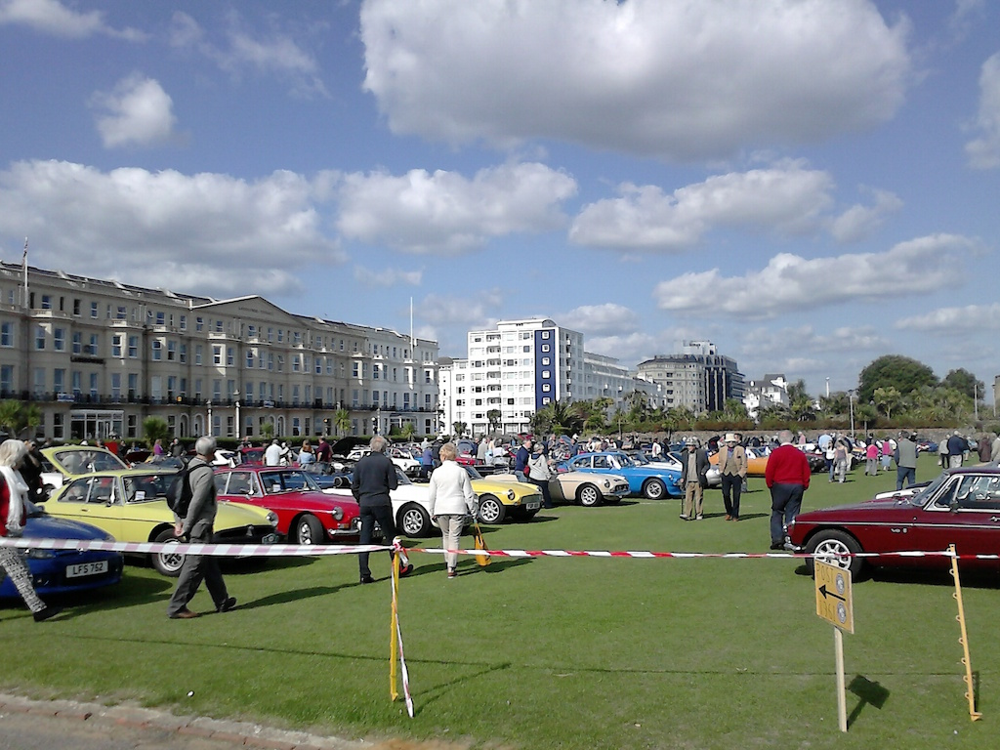
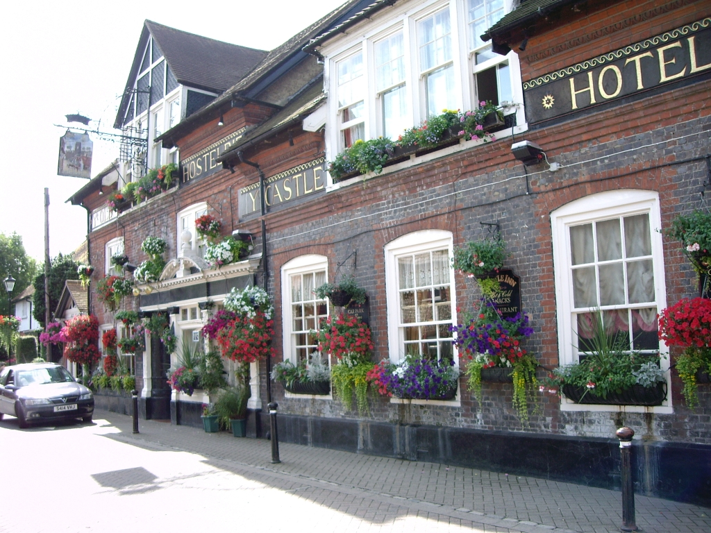
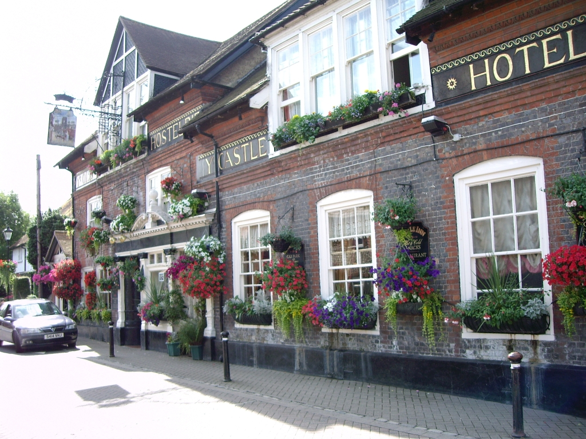
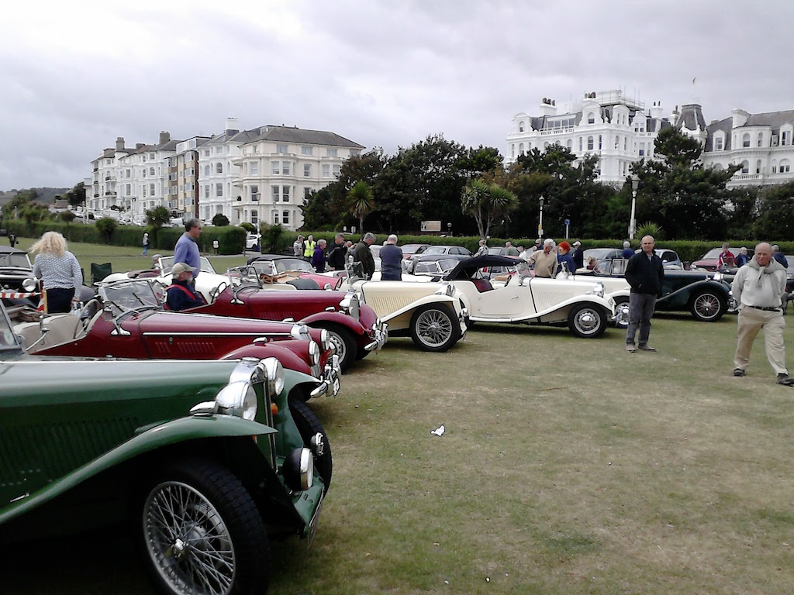
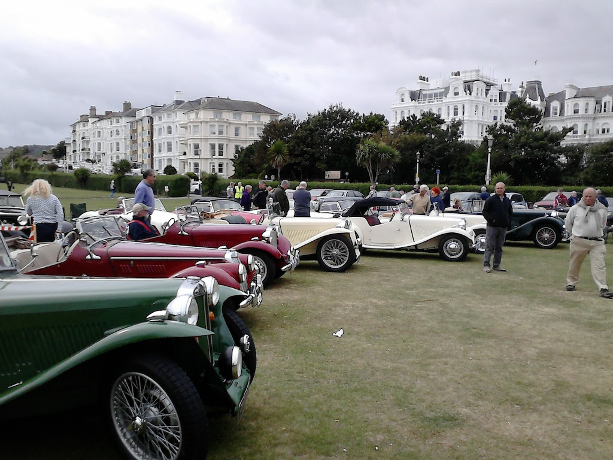

We Did It!
In this context ‘we’ are my wife and I and our TC and ‘it’ is the South Downs Run. Within Main Gear we have seen some fine photos of the event and read about the experiences of a volunteer helping at Eastbourne, so I thought I would write about our experiences of the day as a first-time participant. I bought our TC at the end of June 2015, having wanted one since 1967 when I bought my first car. At the time of the previous year’s run the furthest I had driven the car in one day was 30 miles. Another MG owner had said that if the car will do 20 miles then it will do 200 miles. Nevertheless my confidence was not high. The more I learnt about my 67 year-old car, the more I could see that could go wrong! So I volunteered to assist at Eastbourne instead, helping to set up the field, directing the arriving MGs into the site and then helping to clear everything away at the end of the day. It was a fine, but tiring day, with all the volunteers working hard to help make the day a success.
Since the 2015 South Downs Run I’ve taken our TC on a number of outings, including the monthly Sussex Wanderers runs (starting with coffee and ending with lunch), which I can thoroughly recommend, and the WSMGOC organised Drive It Day. On that latter occasion, while our Daughter and her family were visiting us from California, my American Son-in-law and I did a total of 70 miles in the TC, the longest of our runs so far.
A year on, after going on these outings, having done a complete service and having replaced the spindles on the stub axles after finding small cracks in them, I felt more confident in the ability of the car to complete a long run. So this year, rather than volunteer to help on the day, I registered online to take part.
So on the morning of Sunday 4th September 2016 Angela and I set off in TC4985, with the hood down and the side screens packed away in their compartment, and drove from Bramber to the cafe above Arundel just off Whiteways roundabout, which was the start of the run. We were surprised how many cars were at Whiteways when we arrived at nine o’clock, and no one seemed in any particular hurry to leave! However, after half an hour, even though many were still drinking coffee or eating bacon rolls, people started driving off to start the run.  This is one of the few photos we have of us both in the car. We hadn’t realised that the registration numbers are allocated in age order, not of us, but of the cars. It so happens that we are all the same age, but as you can see, our TC was the fourth oldest car on the run.
This is one of the few photos we have of us both in the car. We hadn’t realised that the registration numbers are allocated in age order, not of us, but of the cars. It so happens that we are all the same age, but as you can see, our TC was the fourth oldest car on the run.
After an unexpected start travelling north through Fittleworth and Wisborough Green we were soon on to part of the route that was well known to us, after all, we had driven from Bramber to get to the start!. In fact, the route took us close to our home, but rather than deviate from the route and go home for coffee, we stopped at the Castle Hotel in Bramber. We thought that we would make another stop on the way, but progress was good and we continued all the way to Eastbourne, arriving at about one o’clock. The section of road in the lee of the Downs through Faulking and Poynings is a favourite route and, having crossed the A23, the drive up to Ditching and then past Plumpton College is reasonably familiar, but from there we were into new territory. In fact it wasn’t until we reached East Dean that we could say we new the road. I find that driving the TC, with its Bishop Cam steering box, requires a level of concentration that makes it difficult to properly take in the scenery. So we have roads to explore in the future. As we approached Girling Gap we were followed by a neighbour in his MGB and who took this photo. Although the weather looks fine, it was very windy and quite chilly. Nevertheless, I had a somewhat pink head by the end of the day!
 

We almost missed the turn down to the sea front, but saw the strategically placed MG sign just in time and descended the winding road towards the sea and soon the MG flags came into sight. As we pulled in to Western Lawns the band was playing and we were directed to the right, where the pre-1956 cars were parked. It was something of a relief to think that the car had run well and got us there without any problem, even if we were somewhat windswept. We had expected to eat our sandwiches somewhere on the way, but instead we sat in a sheltered spot on the promenade and enjoyed the sea view. After a walk along the promenade to the pier and back and stopping for a coffee at the cafe on the field, we looked around the collection of MGs. Pretty impressive, even if most were Bs! At a quarter past three we decided to set off home, via a very different route. We took a leisurely drive along the coast road through Newhaven and Brighton, getting home just before five o’clock; weary, but happy. We had driven a total of 134 miles during the day. This was easily the furthest that I had driven the car in any one day. In fact, the furthest I had driven the car prior to the SDR was the afore mentioned West Sussex MG Owners Club Drive-It Day in April 2016 when we travelled 70 miles.
 

So would we do it again? Certainly! The organisation and route instructions were excellent, the South Downs scenery is magnificent and joining 200 other MG drivers made it a wonderful day. And then, of course, driving a 68 year-old MG TC from start to finish is a challenge, but exhilarating.
(Written 24th January 2017; published in WSMGOC Main Gear, February 2017.)
© David James 2020 Last updated: 17th April 2020